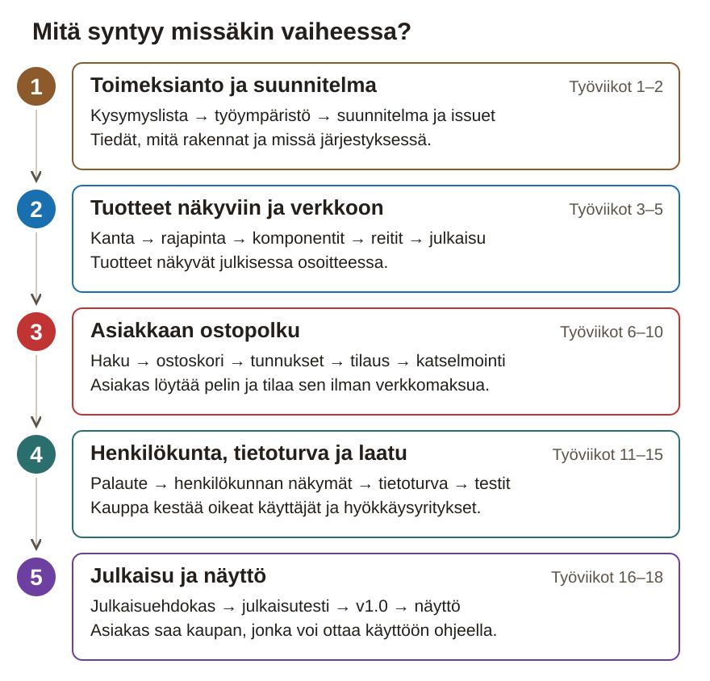

Paperinen työpaketti
Lautapelien verkkokauppa: Vue 3, Pinia, FastAPI, SQLite ja julkaisu tuotantoon
18 työviikkoa · päivätön aikataulu, viikot 1–18 · luovutus 18. työviikon perjantai
Tämä paketti on aikataulu ja tarkistuslista tilanteisiin, joissa sivusto ei ole auki. Projektipäiväkirja kirjoitetaan sivustolla ja viedään repositoryn project-docs-kansioon. Rasti tässä vihossa ei ole palautus: työ on aina Git-repositoryssa.
Aikataulu on päivätön: viikot ovat työviikkoja 1–18 opiskelijan omasta aloituksesta, eivät kalenteriviikkoja.
Julkiseen repositoryyn ei laiteta henkilötietoja, salaisuuksia eikä oikeiden kauppojen tekstejä tai kuvia. Tuotedata keksitään itse.
Valmis verkkokauppa näyttää Nopan Nurkan pelit kategorioittain. Asiakas voi hakea pelejä nimellä, kerätä niitä ostoskoriin ja tehdä tilauksen myös puhelimella ilman verkkomaksua. Henkilökunta lisää ja muokkaa tuotteita selaimessa ja näkee uudet tilaukset omassa näkymässään.

1. Toimeksianto ja suunnitelma · työviikot 1–2. Selvität asiakkaan tarpeen kysymyslistalla, pystytät repositoryn ja molemmat kehityspalvelimet ja teet suunnitelman: käyttäjätarinat, tietomallin ja GitHub-issuet. Suunnitelma tehdään ennen koodia, koska ostoskori ja tilaus rakentuvat tietomallin varaan.
2. Tuotteet näkyviin ja verkkoon · työviikot 3–5. Tuotteet tulevat SQLite-kannasta rajapinnan kautta itse rakennettuihin Vue-komponentteihin, kategoriat ja tuotesivut saavat omat osoitteensa, ja kauppa julkaistaan. Julkaisu tehdään jo nyt, koska sen ongelmat on helpointa korjata, kun rikottavaa on vähän.
3. Asiakkaan ostopolku · työviikot 6–10. Rakennat ostopolun samassa järjestyksessä kuin asiakas sen kulkee: haku, ostoskori, tunnukset ja tilaus. Lopuksi ulkopuolinen henkilö kokeilee kauppaa asiakkaan roolissa, ja hänen palautteensa ohjaa seuraavaa vaihetta.
4. Henkilökunta, tietoturva ja laatu · työviikot 11–15. Toteutat tärkeimmän palautemuutoksen, henkilökunnan tuote- ja tilausnäkymät roolisuojauksella ja saavutettavuustarkistuksen. Ominaisuuslista päättyy työviikolla 13, minkä jälkeen koettelet tietoturvan omin hyökkäystestein ja ajat koko testimatriisin julkaistua versiota vasten.
5. Julkaisu ja näyttö · työviikot 16–18. Jäädytät sisällön julkaisuehdokkaaksi, ja ulkopuolinen testaaja ottaa kaupan käyttöön pelkän kirjoitetun ohjeen avulla. Korjaat estävät löydökset, luovutat version 1.0 asiakkaalle ja osoitat osaamisesi näytössä.
Viikon työvaihe on tämän sivuston työohje. Kun muutat kaupan koodia, kirjaa muutos GitHub-issueksi valmis kun -ehtoineen ja tee se Työtapa-sivun kuudella askeleella. Testitapaus kirjataan testimatriisiin heti, viikon yhteenveto projektipäiväkirjaan viikon lopussa.
| Vko | Ajoitus | Viikon aihe | Vaihe |
|---|---|---|---|
| 1 | Työviikko 1 / 18 | Aloitus: toimeksianto ja työympäristö | 1 |
| 2 | Työviikko 2 / 18 | Suunnitelma ja tietomalli | 1 |
| 3 | Työviikko 3 / 18 | Tuotelista kannasta | 2 |
| 4 | Työviikko 4 / 18 | Kategoriat ja reititys | 2 |
| 5 | Työviikko 5 / 18 | Ensijulkaisu | 2 |
| 6 | Työviikko 6 / 18 | Sanahaku | 3 |
| 7 | Työviikko 7 / 18 | Ostoskori | 3 |
| 8 | Työviikko 8 / 18 | Tunnukset ja istunto | 3 |
| 9 | Työviikko 9 / 18 | Tilaus ja tilaushistoria | 3 |
| 10 | Työviikko 10 / 18 | Asiakaskatselmointi | 3 |
| 11 | Työviikko 11 / 18 | Palautemuutos ja omat tiedot | 4 |
| 12 | Työviikko 12 / 18 | Tuotehallinta ja roolisuojaus | 4 |
| 13 | Työviikko 13 / 18 | Tilaukset ja saavutettavuus | 4 |
| 14 | Työviikko 14 / 18 | Tietoturvaviikko | 4 |
| 15 | Työviikko 15 / 18 | Testaus ja regressio | 4 |
| 16 | Työviikko 16 / 18 | Julkaisuehdokas ja julkaisutestaus | 5 |
| 17 | Työviikko 17 / 18 | Julkaisu v1.0 | 5 |
| 18 | Työviikko 18 / 18 | Näyttö | 5 |
Palautus viimeistään 18. työviikon perjantai. Sivusto: tehtävien tarkat ohjeet, toteutusavut ja projektipäiväkirja.
Yhteys kokonaisprojektiin: Ennen ensimmäistä komponenttia selvität kysymyslistalla, mitä Nopan Nurkka oikeasti tarvitsee ja mitä on rajattu pois. Samalla pystytät repositoryn ja molemmat kehityspalvelimet, koska Git-historia on työnäyte ensimmäisestä päivästä ja julkisen repositoryn sopimuksia ei voi perua jälkikäteen. Työviikolla 2 kysymysten vastaukset muuttuvat suunnitelmaksi.
Viikon tavoite: Kaupan runko käynnistyy omalla koneellasi README:n komennoilla, ja kysymyslistan vastaukset on kirjattu.
Työvaihe 1 / 4 · Kirjoita kysymyslista toimeksiannosta
Valmis kun: Kysymyslistassa on vähintään kuusi kysymystä, ja jokaisen perässä on ohjaajan vastaus tai merkintä avoimesta asiasta.
Tallenna työnäyte: Kysymyslista tiedostoksi project-docs/kysymykset.md (viet sen repositoryyn työvaiheessa 3). Vastaukset omin sanoin työviikon 1 päiväkirjaan.
Työvaihe 2 / 4 · Sovi repositoryn julkisuus ja katselmoijien etsintä
Valmis kun: Repositoryn julkisuus ja tekijänimi on sovittu tai kirjattu avoimeksi asiaksi, ja katselmoijien etsintä on käynnissä.
Tallenna työnäyte: Sovitut ja avoimet asiat suunnitelmalomakkeelle. Katselmoijien etsinnän tila työviikon 1 päiväkirjaan.
Työvaihe 3 / 4 · Luo repository ja kansiorakenne
frontend/, backend/ ja project-docs/..gitignore ainakin node_modules/, __pycache__/, *.db ja .env, jotta riippuvuudet, kanta ja salaisuudet eivät päädy repositoryyn.README.md: mitä rakennat ja miten projekti käynnistetään. Käynnistyskomennot lisäät työvaiheessa 4.project-docs/kysymykset.md.git init ja tee ensimmäinen commit. Luo GitHubiin repository sovitulla julkisuudella ja vie commit sinne komennolla git push.Valmis kun: Repository on GitHubissa, siinä ovat kolme kansiota, README ja .gitignore, ja ensimmäinen commit näkyy historiassa.
Tallenna työnäyte: Repositoryn osoite ja ensimmäisen commitin tunnus työviikon 1 päiväkirjaan.
Työvaihe 4 / 4 · Käynnistä Vue-frontend ja FastAPI-backend omalla koneella
npm create vite@latest frontend -- --template vue, aja npm install ja käynnistä kehityspalvelin komennolla npm run dev.backend/-kansioon virtuaaliympäristö, asenna pip install fastapi uvicorn ja käynnistä sovellus komennolla uvicorn main:app --reload./docs-sivu selaimessa. FastAPI näyttää siellä rajapinnan, jota kokeilet tulevilla viikoilla.Valmis kun: Molemmat kehityspalvelimet vastaavat selaimessa README:n komennoilla, ja backendin /docs-sivu aukeaa.
Tallenna työnäyte: Käynnistyskomennot README:hen commitilla ja työviikon 1 päiväkirjaan.
Viikon lopputarkistus: Molemmat kehityspalvelimet käynnistyvät ohjeen komennoilla; repository on GitHubissa README:n ja ensimmäisen commitin kanssa; kysymyslista on ohjaajalla ja vastaukset tai avoimet asiat, mukaan lukien katselmoijien tilanne, on kirjattu.
Työnäyte Git-repositoryyn ennen rastia: repositoryn linkki, ensimmäisen commitin tunnus, käynnistyskomennot README:ssä ja kysymyslista tiedostossa project-docs/kysymykset.md.
Yhteys kokonaisprojektiin: Työviikon 1 kysymysten vastaukset muuttuvat nyt käyttäjätarinoiksi, tietomalliksi ja GitHub-issueiksi. Tietomalli tehdään ennen koodia, koska ostoskori ja tilaus rakentuvat sen varaan, ja pakollisen ytimen rajaus estää ominaisuuslistaa kasvamasta. Tästä suunnitelmasta loput viikot ottavat järjestyksensä, ja työviikolla 3 tietomalli muuttuu oikeiksi tauluiksi.
Viikon tavoite: Tarinat, tietomalli ja rautalangat on kirjattu, ja kaupan pakollinen ydin on GitHubissa vähintään kahdeksana issuena.
Työvaihe 1 / 4 · Kirjoita ja priorisoi käyttäjätarinat
Valmis kun: Jokaisella tarinalla on hyväksymiskriteerit, luokka P0, P1 tai P2 perusteluineen ja työmääräarvio, ja maksunvälitys on kirjattu pois rajatuksi.
Tallenna työnäyte: Tarinat tiedostoksi project-docs/kayttajatarinat.md commitilla. Suunnitelman lataus ei korvaa tätä tiedostoa.
Työvaihe 2 / 4 · Päätä tuoteteema ja piirrä tietomalli
project-docs/tietomalli.png, ja kirjoita taulut ja suhteet lyhyesti suunnitelmalomakkeen tietomallikenttään.Valmis kun: Teema on päätetty perusteluineen, ja tietomallikaaviosta näkee viisi taulua, niiden suhteet ja sen, mihin tilausrivin hinta tallentuu.
Tallenna työnäyte: Kaavio project-docs/-kansioon. Teema ja tietomalli suunnitelmalomakkeelle, josta lataat project-docs/suunnitelma.md:n.
Työvaihe 3 / 4 · Vertaa kolme tietovarastoa ja perustele valinta
Valmis kun: Vertailussa on kolme vaihtoehtoa kolmella perusteella, jokaisen haitta ja valinta perusteltuna kaupan omalla datalla.
Tallenna työnäyte: Vertailu suunnitelmalomakkeelle ja siitä project-docs/suunnitelma.md:hen.
Työvaihe 4 / 4 · Hyväksytä rautalangat ja pilko työ issueiksi
Valmis kun: Rautalankojen hyväksyntä on kirjattu hyväksyjän sanoin, komponenttijako on suunnitelmassa, ja GitHubissa on vähintään kahdeksan P0-issueta valmis kun -ehtoineen.
Tallenna työnäyte: Rautalangat kansioon project-docs/rautalangat/ ja issuen numerot tiedostoon kayttajatarinat.md. Hyväksyjä, hänen sanansa ja issue-listan linkki työviikon 2 päiväkirjaan.
Viikon lopputarkistus: Käyttäjätarinat prioriteetteineen ja arvioineen ovat tiedostossa kayttajatarinat.md; suunnitelma.md:ssä on teemapäätös, tietomalli ja tietovarastoperustelu, ja tietomallikaavio on project-docs-kansiossa; issueita on vähintään kahdeksan ja P0 on merkitty; rautalankojen hyväksyntä on kirjattu: kuka hyväksyi ja mitä hän sanoi. Hyväksyjäksi käy ohjaaja asiakkaan äänenä, jos katselmoijaa ei ole vielä nimetty.
Työnäyte Git-repositoryyn ennen rastia: suunnitelma.md, kayttajatarinat.md, tietomallikuva, issue-listan linkki ja hyväksyntämerkintä.
Yhteys kokonaisprojektiin: Työviikon 2 tietomalli muuttuu nyt oikeiksi tauluiksi, ensimmäiseksi endpointiksi eli rajapinnan yksittäiseksi osoitteeksi ja ensimmäisiksi komponenteiksi. Data siirtyy pois koodista kantaan, koska henkilökunta lisää tuotteita myöhemmin selaimessa ja kovakoodattu lista kaatuisi silloin. Työviikolla 4 sama tuotelista saa kategoriat ja omat osoitteet.
Viikon tavoite: Kaupan etusivu näyttää SQLite-kannasta haetut tuotteet, ja sammutettu backend näkyy käyttäjälle virheilmoituksena eikä tyhjänä ruutuna.
Työvaihe 1 / 4 · Luo SQLite-kanta ja seed-data omalle teemalle
tuote ja kategoria SQLite-kantaan..gitignore estää *.db-tiedoston. Repositoryyn menee skripti, ei kanta.Valmis kun: Kannassa on noin 20 oman teeman tuotetta kategorioineen, ja ne syntyvät uudelleen yhdellä seed-skriptin ajolla.
Tallenna työnäyte: Taulujen luonti ja seed-skripti backend/-kansioon commitilla. Seed-datan kentät ja niiden perustelu työviikon 3 päiväkirjaan.
Työvaihe 2 / 4 · Toteuta GET /api/tuotteet ja kokeile sitä /docs-sivulla
GET /api/tuotteet, joka hakee tuotteet kannasta ja palauttaa ne JSONina./docs-sivu, aja endpoint ja tarkista, että jokaisella tuotteella on kaikki kentät.Valmis kun: GET /api/tuotteet palauttaa kannan tuotteet JSONina, ja se on kokeiltu /docs-sivulla ennen frontendin koodaamista.
Tallenna työnäyte: Endpoint commitilla. Vastauksen muoto työviikon 3 päiväkirjaan.
Työvaihe 3 / 4 · Rakenna TuoteLista- ja TuoteKortti-komponentit itse
TuoteLista.vue, joka hakee tuotteet fetch-kutsulla backendin osoitteesta, esimerkiksi http://localhost:8000/api/tuotteet, ja pitää ne komponentin tilassa.TuoteKortti.vue, joka saa yhden tuotteen propsina eli komponentille annettuna arvona ja näyttää nimen, hinnan ja kuvauksen.Valmis kun: Kehityspalvelin näyttää kannasta tulevat tuotteet itse rakennetuissa komponenteissa.
Tallenna työnäyte: Komponentit commitilla. Kuvakaappaus tuotelistasta työviikon 3 päiväkirjaan.
Työvaihe 4 / 4 · Toteuta tuotelistan kolme tilaa ja testaa ne
.json()-kutsua.project-docs/testimatriisi.md ja kirjaa testitapaukset T01 ja T02 ennen ajoa: tunnus, lähtötila, toiminta ja odotettu tulos.Valmis kun: Lataus-, tyhjä- ja virhetila näkyvät käyttäjälle, sammutettu backend antaa virheilmoituksen, ja T01:n ja T02:n odotettu ja toteutunut tulos ovat testimatriisissa.
Tallenna työnäyte: Testitapaukset T01 ja T02 tiedostoon project-docs/testimatriisi.md commitilla. Tulos lyhyesti työviikon 3 päiväkirjaan.
Viikon lopputarkistus: Kehityspalvelin näyttää kannasta tulevat tuotteet; API palauttaa JSONia, mikä on testattu /docs-sivulta; kun backend sammutetaan, käyttäjä näkee virheilmoituksen eikä tyhjää ruutua.
Työnäyte Git-repositoryyn ennen rastia: commit-linkki, kuvakaappaus tuotelistasta ja testitapausten T01–T02 tulokset tiedostossa project-docs/testimatriisi.md.
Yhteys kokonaisprojektiin: Työviikon 3 tuotelista saa nyt rakenteen: kategoriat ja tuotesivut saavat omat osoitteensa, joita voi jakaa ja avata suoraan. Reititys tehdään ennen hakua, koria ja hallintanäkymiä, koska ne kaikki tarvitsevat oman osoitteen. Kun osoitteet toimivat selaimen päivityksellä, työviikon 5 julkaisu ei kaadu niihin.
Viikon tavoite: Asiakas avaa kategorian tai tuotteen suoraan sen omasta osoitteesta, myös puhelimella.
Työvaihe 1 / 4 · Ota vue-router käyttöön ja perustele valinta
vue-router ja luo tiedosto, jossa reitit määritellään./kategoria/:id ja tuotesivulle /tuote/:id reittikartan mukaan.Valmis kun: Reitit on määritelty vue-routerilla, reittikartta on suunnitelmassa ja valinnan perustelu on kirjoitettu.
Tallenna työnäyte: Reittikartta suunnitelmalomakkeen komponenttijako ja sivukartta -kenttään. Perustelu työviikon 4 päiväkirjaan.
Työvaihe 2 / 4 · Toteuta kategorialistaus ja kategorian tuotenäkymä
/kategoria/:id.KategoriaNakyma, joka hakee tuotteet reitin kategoria-id:n perusteella ja käyttää työviikon 3 TuoteKorttia.Valmis kun: Kategorian valinta näyttää vain sen kategorian tuotteet omassa osoitteessaan.
Tallenna työnäyte: Endpoint ja näkymät commitilla.
Työvaihe 3 / 4 · Toteuta tuotesivu ja 404-näkymä
TuoteNakyma, joka hakee tuotteen osoitteen vaihtuvan osan perusteella, esimerkiksi /tuote/12. Tätä osaa kutsutaan reittiparametriksi./:pathMatch(.*)*, joka näyttää oman 404-näkymän. 404 on virhekoodi, joka tarkoittaa, ettei osoitetta löydy.Valmis kun: Jokaisella tuotteella on oma osoite, joka toimii suoraan avattuna ja päivityksellä, ja tuntematon osoite näyttää 404-näkymän.
Tallenna työnäyte: Näkymät ja reitit commitilla.
Työvaihe 4 / 4 · Tee navigaatiosta puhelimella ja näppäimistöllä toimiva
npm run dev -- --host, avaa kauppa omalla puhelimella samassa verkossa ja ota näkymästä kuvakaappaus.Valmis kun: Navigointi toimii omalla puhelimella, perusnäkymissä pääsee liikkumaan näppäimistöllä, ja taitekohdat on kirjattu perusteluineen.
Tallenna työnäyte: Taitekohdat suunnitelmalomakkeelle. Kuvakaappaus puhelimelta ja puhelintestin havainnot työviikon 4 päiväkirjaan.
Viikon lopputarkistus: Jokaisella tuotteella ja kategorialla on oma URL, joka toimii myös selaimen päivityksellä; tuntematon osoite näyttää 404-näkymän; navigointi toimii omalla puhelimella ja perusnäkymissä pääsee liikkumaan näppäimistöllä.
Työnäyte Git-repositoryyn ennen rastia: commit, reittikartta suunnitelmassa ja kuvakaappaus omalta puhelimelta.
Yhteys kokonaisprojektiin: Työviikkojen 3 ja 4 kauppa siirtyy nyt pois omalta koneelta julkiseen osoitteeseen. Julkaisu tehdään jo nyt, koska CORS-asetusten, polkujen ja ympäristömuuttujien ongelmat on helpointa korjata, kun kaupassa on vielä vähän rikottavaa. Loput viikot tehdään ympäristössä, jossa julkaisu on jo kertaalleen onnistunut.
Viikon tavoite: Kuka tahansa voi avata NoppaKaupan julkisesta osoitteesta puhelimella ja nähdä tuotteet kannasta.
Työvaihe 1 / 4 · Vertaa julkaisualustat ja valitse perustellen
Valmis kun: Suunnitelmassa on vähintään kolmen alustan vertailu rajoitteineen ja perusteltu valinta.
Tallenna työnäyte: Vertailu ja valinta suunnitelmalomakkeen julkaisualusta-kenttään ja siitä project-docs/suunnitelma.md:hen.
Työvaihe 2 / 4 · Erota kehitys- ja tuotantoasetukset
VITE_API_URL. Tarkista, ettei koodissa ole enää kovakoodattua localhostia..env.example ilman arvoja. Tarkista, että .env ja *.db ovat .gitignore-tiedostossa.npm run build puhtaassa kansiossa. Build kääntää lähdekoodin valmiiksi julkaisutiedostoiksi dist/-kansioon.Valmis kun: Build onnistuu, rajapinnan osoite tulee ympäristömuuttujasta, ja .env.example on repositoryssa mutta .env ei.
Tallenna työnäyte: Asetukset ja .env.example commitilla.
Työvaihe 3 / 4 · Julkaise kauppa ja savutestaa se toisella laitteella
/docs-sivu.Valmis kun: Julkinen osoite näyttää tuotelistan kannasta puhelimella ja toisella koneella, ja testitapauksen T03 tulos on testimatriisissa.
Tallenna työnäyte: Julkinen osoite ja lokin kuvakaappaus työviikon 5 päiväkirjaan. Testitapaus T03 tiedostoon project-docs/testimatriisi.md.
Työvaihe 4 / 4 · Aloita käyttöönotto-ohje READMEen
.env.example.Valmis kun: README:ssä on käyttöönoton ensimmäinen versio: käynnistys, ympäristömuuttujat ja julkaisu.
Tallenna työnäyte: README commitilla repositoryyn.
Viikon lopputarkistus: Julkinen URL näyttää tuotelistan kannasta; osoite toimii puhelimella ja toisella koneella; salaisuudet ja .env-tiedosto eivät ole repositoryssä.
Työnäyte Git-repositoryyn ennen rastia: julkinen URL, julkaisulokin kuvakaappaus, vertailutaulukko suunnitelmassa ja T03:n tulos testimatriisissa.
Yhteys kokonaisprojektiin: Työviikon 4 kategoriat vievät asiakkaan jo oikeaan hyllyyn, ja nyt hän löytää pelin myös suoraan nimellä. Samalla käyttäjän syöte kulkee ensimmäistä kertaa kantaan asti, joten parametrisoitu kysely opitaan tässä eikä vasta tietoturvaviikolla. Hausta asiakas pääsee tuotteen luo, ja työviikolla 7 tuote päätyy ostoskoriin.
Viikon tavoite: Asiakas löytää pelin kirjoittamalla nimen osan hakukenttään, eikä erikoismerkeillä kirjoitettu haku riko mitään.
Työvaihe 1 / 4 · Toteuta haku parametrisoidulla kyselyllä
GET /api/tuotteet ottamaan hakusana kyselyparametrina, esimerkiksi ?haku=nop.?-paikkamerkillä, esimerkiksi WHERE nimi LIKE ?. Älä koskaan liitä syötettä kyselytekstiin merkkijonona.'; DROP TABLE tuote; --.Valmis kun: Haku nimen osalla löytää tuotteen (esimerkiksi ”nop” → ”Nopanheitto”), ja haku '; DROP TABLE tuote; -- palauttaa nolla osumaa kaatamatta mitään.
Tallenna työnäyte: Endpoint commitilla. Selitys parametrisoinnista työviikon 6 päiväkirjaan.
Työvaihe 2 / 4 · Rakenna hakukenttä ja tuloslista
Valmis kun: Hakukenttään kirjoitettu nimen osa näyttää osuvat tuotteet rajapinnasta, ja hakutavan valinta on perusteltu.
Tallenna työnäyte: Komponentti commitilla. Hakutavan perustelu ja kuvakaappaus hakudemosta työviikon 6 päiväkirjaan.
Työvaihe 3 / 4 · Näytä haun tyhjä tulos ja virhe omina viesteinään
Valmis kun: Tyhjä tulos ja backend-virhe näyttävät eri viestin, eikä kumpikaan jätä ruutua tyhjäksi.
Tallenna työnäyte: Muutokset commitilla.
Työvaihe 4 / 4 · Aja testitapaukset T04 ja T05
Valmis kun: T04:n ja T05:n odotettu ja toteutunut tulos ovat testimatriisissa, eikä erikoismerkkihaku muuttanut kantaa.
Tallenna työnäyte: Testitapaukset tiedostoon project-docs/testimatriisi.md commitilla. Tulokset lyhyesti työviikon 6 päiväkirjaan.
Viikon lopputarkistus: Haku ”nop” löytää ”Nopanheitto”-tuotteen; haku merkkijonolla '; DROP TABLE palauttaa nolla osumaa eikä kaada mitään; tyhjä tulos opastaa käyttäjää.
Työnäyte Git-repositoryyn ennen rastia: commit, testitapausten T04–T05 tulokset testimatriisissa ja kuvakaappaus hakudemosta.
Yhteys kokonaisprojektiin: Työviikkojen 4 ja 6 kategoriat ja haku vievät asiakkaan tuotteen luo, ja nyt tuote päätyy ostoskoriin. Kori rakennetaan Pinia-storeksi omassa haarassa, koska se on kaupan tila, jonka varaan työviikon 9 tilaus rakentuu. Samalla harjoittelet hallitun yhdistämisen pull requestilla, jota tarvitset loppuprojektin muutoksissa.
Viikon tavoite: Asiakas voi lisätä pelejä koriin, muuttaa määriä ja poistaa rivejä, ja kori säilyy sivun päivityksessä.
Työvaihe 1 / 4 · Vertaa korin tallennustavat ja päätä ohjaajan kanssa
Valmis kun: Päätösmuistiossa on kaksi todellista vaihtoehtoa hyötyineen ja haittoineen, päätös ja ohjaajan kommentti.
Tallenna työnäyte: Vertailu päätösmuistioksi project-docs/paatos-ostoskori.md. Päätös ja perustelu suunnitelmaan.
Työvaihe 2 / 4 · Toteuta kori-store haarassa feature/ostoskori
feature/ostoskori ja tee kaikki korin muutokset siinä. Haara pitää keskeneräisen työn erillään pääversiosta.stores/kori.js: tila rivit, getterit kappalemaara, summa ja onTyhja sekä actionit lisaa, poista, muutaMaara ja tyhjenna.Valmis kun: Store lisää, poistaa ja muuttaa määriä oikein, summa täsmää, ja kori säilyy sivun päivityksessä.
Tallenna työnäyte: Store pieninä commiteina haaraan feature/ostoskori.
Työvaihe 3 / 4 · Rakenna korinäkymä ja yhdistä haara pull requestilla
/kori näkymä, jossa rivit, määrän muutos, poisto ja kokonaissumma luetaan storesta.feature/ostoskori main-haaraan. Pull request on pyyntö yhdistää haara pääversioon.Valmis kun: Korinäkymä toimii main-haarassa, pull request on yhdistetty, ja mahdollinen konflikti on ratkaistu ja kirjattu.
Tallenna työnäyte: Pull requestin linkki ja konfliktin ratkaisu työviikon 7 päiväkirjaan.
Työvaihe 4 / 4 · Aja testitapaukset T06–T07 ja kirjaa ketju K1
Valmis kun: T06:n ja T07:n tulokset ovat testimatriisissa, ja K1-ketju on kokonainen havainnosta regressiotestiin.
Tallenna työnäyte: Testitapaukset tiedostoon project-docs/testimatriisi.md. K1-ketju kokonaisena työviikon 7 päiväkirjaan.
Viikon lopputarkistus: Tuotteita voi lisätä ja poistaa, määrää muuttaa ja summa täsmää; kori säilyy sivun päivityksessä; pull request on yhdistetty ja mahdollinen konflikti on ratkaistu.
Työnäyte Git-repositoryyn ennen rastia: pull requestin linkki, päätösmuistio, testitapausten T06–T07 tulokset testimatriisissa ja K1-ketju päiväkirjassa.
Yhteys kokonaisprojektiin: Työviikon 7 ostoskori on olemassa, mutta tilaus tarvitsee tekijän. Tunnukset tehdään nyt, koska salasanakäsittelyä ei voi paikata jälkikäteen, ja käyttäjän roolikenttä lisätään heti, vaikka henkilökunnan näkymät tulevat vasta työviikolla 12. Kirjautuminen on työviikon 9 tilauksen edellytys.
Viikon tavoite: Asiakas voi rekisteröityä ja kirjautua sisään ja ulos, eikä kannassa ole yhtään selkokielistä salasanaa.
Työvaihe 1 / 4 · Vertaa istuntoratkaisut ja päätä ohjaajan kanssa
Valmis kun: Päätösmuistiossa ovat molempien vaihtoehtojen hyödyt ja haitat omin sanoin, päätös ja ohjaajan kommentti.
Tallenna työnäyte: Vertailu päätösmuistioksi project-docs/paatos-istunto.md. Päätös ja perustelu suunnitelmaan.
Työvaihe 2 / 4 · Toteuta rekisteröityminen ja salasanan hashaus
kayttaja roolikenttä heti, vaikka henkilökunnan näkymät tulevat vasta työviikolla 12.$2b$), eikä selkokielistä salasanaa saa löytyä.Valmis kun: Rekisteröityminen luo käyttäjän roolikenttineen, ja kannassa on vain hashattuja salasanoja.
Tallenna työnäyte: Endpoint commitilla. Kuvakaappaus kantariveistä, joissa hash näkyy, työviikon 8 päiväkirjaan.
Työvaihe 3 / 4 · Toteuta kirjautuminen, uloskirjautuminen ja auth-store
POST /api/kirjaudu, joka tarkistaa salasanan hashia vasten ja luo istunnon valitsemallasi tavalla./kirjaudu rekisteröitymis- ja kirjautumislomake labeleineen ja virheviesteineen.Valmis kun: Kirjautumistila säilyy sivun päivityksessä, uloskirjautuminen tyhjentää sen, eikä virheilmoitus paljasta, kumpi meni väärin.
Tallenna työnäyte: Kirjautuminen, auth-store ja lomakkeet commitilla.
Työvaihe 4 / 4 · Aja testitapaukset T08 ja T09
Valmis kun: T08:n ja T09:n odotettu ja toteutunut tulos ovat testimatriisissa, eikä kirjautunut tila palaa uloskirjautumisen jälkeen.
Tallenna työnäyte: Testitapaukset tiedostoon project-docs/testimatriisi.md commitilla. Tulokset lyhyesti työviikon 8 päiväkirjaan.
Viikon lopputarkistus: Kannassa ei näy yhtään selkokielistä salasanaa; väärä salasana ja tuntematon tunnus antavat saman yleisen virheilmoituksen; kirjautumistila säilyy sivun päivityksessä ja uloskirjautuminen tyhjentää sen.
Työnäyte Git-repositoryyn ennen rastia: päätösmuistio, kuvakaappaus kantariveistä (hash näkyy, salasana ei) ja testitapausten T08–T09 tulokset testimatriisissa.
Yhteys kokonaisprojektiin: Ostoskori työviikolta 7 ja tunnukset työviikolta 8 yhdistyvät nyt tilaukseksi, ja asiakkaan ostopolku on kasassa alusta loppuun. Tilaus tallennetaan transaktiona tilaushetken hinnoilla, koska hinnanmuutos ei saa muuttaa vanhoja tilauksia. Työviikolla 10 ulkopuolinen henkilö kokeilee tätä ostopolkua.
Viikon tavoite: Kirjautunut asiakas tilaa korin sisällön ilman verkkomaksua ja näkee tilauksen omassa tilaushistoriassaan.
Työvaihe 1 / 4 · Tallenna tilaus transaktiona tilaushetken hinnoilla
tilaus ja tilausrivi työviikon 2 tietomallin mukaan.POST /api/tilaukset, joka tallentaa tilauksen ja sen rivit samassa transaktiossa. Virhe kesken tallennuksen peruu kaiken (ROLLBACK).Valmis kun: Tilaus tallentuu kantaan riveineen ja tilaushetken hinnoilla, keskeytetty tilaus ei jätä puolikasta riviä, ja kirjautumaton saa virhekoodin 401.
Tallenna työnäyte: Endpoint commitilla, joka viittaa issueen. Transaktion toteutustapa työviikon 9 päiväkirjaan.
Työvaihe 2 / 4 · Rakenna tilauslomake ja perustele validointiratkaisu
Valmis kun: Tilauslomake lähettää korin rajapintaan, kori tyhjenee vain onnistuneesta tilauksesta, ja validointiratkaisu on perusteltu suunnitelmassa.
Tallenna työnäyte: Lomake commitilla. Lisäpaketin tai oman validoinnin perustelu suunnitelmaan.
Työvaihe 3 / 4 · Toteuta tilaushistoria, joka näyttää vain omat tilaukset
GET /api/tilaukset, joka palauttaa vain kirjautuneen käyttäjän tilaukset riveineen. Kirjautumaton saa virhekoodin 401./tilaukset näkymä, jossa näkyvät tilausten päivä, rivit ja summa.Valmis kun: Historia näyttää vain kirjautuneen käyttäjän omat tilaukset, eikä vanhan tilauksen summa muutu hinnanmuutoksesta.
Tallenna työnäyte: Näkymä ja endpoint commitilla. Kuvakaappaus historiasta työviikon 9 päiväkirjaan.
Työvaihe 4 / 4 · Aja testitapaukset T10 ja T11
Valmis kun: T10:n ja T11:n odotettu ja toteutunut tulos ovat testimatriisissa.
Tallenna työnäyte: Testitapaukset tiedostoon project-docs/testimatriisi.md commitilla. Tulokset lyhyesti työviikon 9 päiväkirjaan.
Viikon lopputarkistus: Tilaus näkyy kannassa riveineen ja tilaushetken hinnoilla; historia näyttää vain omat tilaukset; tyhjää koria ei voi tilata eikä kirjautumaton pääse tilaamaan.
Työnäyte Git-repositoryyn ennen rastia: commit, lisäpaketin perustelu suunnitelmassa, testitapausten T10–T11 tulokset testimatriisissa ja kuvakaappaus historiasta.
Yhteys kokonaisprojektiin: Ostopolku on kasassa työviikolta 9. Nyt sitä kokeilee ihminen, joka ei tiedä, miten kauppa on rakennettu, koska palaute puolivälissä ehtii vielä muuttaa suuntaa. Hänen havaintonsa ohjaavat vaiheen 4 työjärjestystä työviikosta 11 alkaen.
Viikon tavoite: Ulkopuolinen henkilö on löytänyt pelin, lisännyt sen koriin ja tilannut sen julkaistussa kaupassa, ja hänen palautteensa on GitHub-issueina.
Työvaihe 1 / 4 · Sovi katselmoija ja kirjoita kolmen tehtävän rata
Valmis kun: Katselmoija ja aika on sovittu, ja tehtävärata ja ympäristön tiedot ovat muistiossa valmiina.
Tallenna työnäyte: Muistiopohja tiedostoon project-docs/katselmointimuistio.md.
Työvaihe 2 / 4 · Vedä katselmointi ja kirjaa sitaatit erillään tulkinnasta
Valmis kun: Muistiossa on nimetty rooli, testaajan sanat sitaatteina ja oma tulkinta erillään niistä.
Tallenna työnäyte: Havainnot project-docs/katselmointimuistio.md:hen. Kolme vaikuttavinta sitaattia työviikon 10 päiväkirjaan.
Työvaihe 3 / 4 · Muuta palaute issueiksi ja priorisoi ne ohjaajan kanssa
Valmis kun: Vähintään kolme palautekohtaa on issueina prioriteetteineen, ja sovitut muutokset ovat muistiossa.
Tallenna työnäyte: Issueiden numerot ja prioriteetit muistioon ja työviikon 10 päiväkirjaan.
Työvaihe 4 / 4 · Kirjoita asiakkaalle yhteenveto ilman teknistä jargonia
Valmis kun: Yhteenveto kertoo ilman teknistä jargonia, mitä testattiin, mitä löytyi ja mitä seuraavaksi tehdään, ja ohjaaja erottaa muistiosta sitaatit ja tulkinnan.
Tallenna työnäyte: Yhteenveto muistion loppuun tiedostoon project-docs/katselmointimuistio.md.
Viikon lopputarkistus: Katselmointimuistiossa on nimetty rooli, testaajan omat sanat ja niistä erillään oma tulkinta; vähintään kolme palautekohtaa on issueina prioriteetteineen; asiakasyhteenveto on kirjoitettu.
Työnäyte Git-repositoryyn ennen rastia: katselmointimuistio project-docs-kansiossa ja palauteissueiden linkit.
Yhteys kokonaisprojektiin: Työviikon 10 katselmointimuistio muuttuu nyt koodiksi ja julkaistuksi versioksi, koska palautteen kirjaaminen ilman toteutusta ei riitä. Samalla asiakkaan omien tietojen muokkaus täydentää työviikon 8 tunnukset. Päivitetyt työmääräarviot kertovat, mahtuuko loppu vielä aikatauluun ennen työviikon 13 ominaisuusrajaa.
Viikon tavoite: Katselmoinnin tärkein muutos näkyy julkaistussa kaupassa, ja asiakas voi korjata omat yhteystietonsa.
Työvaihe 1 / 4 · Vie tärkein palautemuutos tuotantoon asti
fix/23-korikuvake, ja tee muutos siinä. Viittaa commit-viestissä issueen.Valmis kun: Muutos näkyy julkaistussa versiossa, issue on suljettu committiin viitaten, ja testaajan kuittaus on muistiossa.
Tallenna työnäyte: Ketju issuesta committiin ja tuotantolinkkiin työviikon 11 päiväkirjaan.
Työvaihe 2 / 4 · Toteuta omien yhteystietojen muokkaus
Valmis kun: Omia yhteystietoja voi muokata ja ne tallentuvat, mutta käyttäjätunnusta ei voi vaihtaa.
Tallenna työnäyte: Lomake ja endpoint commitilla.
Työvaihe 3 / 4 · Päivitä työmääräarviot toteutuneen perusteella
project-docs/kayttajatarinat.md ja kirjaa jokaisen viereen toteutunut aika.project-docs/suunnitelma.md ja tee commit, jotta muutoshistoria säilyy.Valmis kun: Arvioissa näkyvät toteutunut aika ja poikkeaman syy, ja päivitys on omana committinaan.
Tallenna työnäyte: Päivitetyt arviot ja suunnitelma commitilla project-docs/-kansioon.
Työvaihe 4 / 4 · Kirjaa virheenkorjausketju K2 aidosta havainnosta
Valmis kun: K2-ketju on kokonainen: havainto, toistamisohje, syy, korjauscommit, uusintatesti ja regressiotesti.
Tallenna työnäyte: K2-ketju kokonaisena työviikon 11 päiväkirjaan.
Viikon lopputarkistus: Muutos näkyy julkaistussa versiossa ja issue sulkeutuu committiin viitaten; omia tietoja voi muokata mutta käyttäjätunnusta ei; suunnitelma-aineistossa (kayttajatarinat.md) näkyy päivitetty arvio perusteluineen.
Työnäyte Git-repositoryyn ennen rastia: ketju issuesta committiin ja tuotantolinkkiin, K2-ketju ja päivitettyjen arvioiden muutoshistoria.
Yhteys kokonaisprojektiin: Työviikon 8 roolikenttä otetaan nyt käyttöön: henkilökunta saa oman tuotehallinnan, ja sama kanta, joka työviikolla 3 vain luettiin, saa kirjoitusoperaatiot. Hallinta suojataan sekä rajapinnassa että käyttöliittymässä, koska pelkkä napin piilottaminen ei estä suoraa kutsua. Työviikolla 13 sama suojaus kattaa myös tilausten hallinnan.
Viikon tavoite: Henkilökunta lisää ja muokkaa tuotteita selaimessa, mutta asiakkaan suora kutsu hallintarajapintaan hylätään.
Työvaihe 1 / 4 · Suojaa hallinta rajapinnassa ja käyttöliittymässä
vaadi_henkilokunta, ja liitä se jokaiseen hallintaendpointiin. Se palauttaa 401 (ei kirjautunut) ilman istuntoa ja 403 (ei oikeuksia) väärällä roolilla./hallinta/tuotteet asiakkaana. Sinut pitää ohjata pois.Valmis kun: Hallintaendpointit palauttavat 401 ilman istuntoa ja 403 asiakkaan istunnolla, ja asiakas ohjataan pois hallintareiteiltä.
Tallenna työnäyte: Suojaus commitilla. Kuvaus molemmista tasoista työviikon 12 päiväkirjaan.
Työvaihe 2 / 4 · Rakenna henkilökunnan tuotehallintanäkymä
/hallinta/tuotteet tuotelista ja lomake lisäykseen ja muokkaukseen.Valmis kun: Henkilökunta voi lisätä, muokata ja poistaa tuotteita selaimessa, ja lisätty tuote näkyy heti kaupan puolella.
Tallenna työnäyte: Näkymä ja endpointit commitilla. Kuvakaappaus hallintanäkymästä työviikon 12 päiväkirjaan.
Työvaihe 3 / 4 · Validoi tuotetiedot sekä lomakkeessa että backendissä
Valmis kun: Negatiivinen hinta ja puuttuva pakollinen kenttä hylätään sekä lomakkeessa että suorassa rajapintakutsussa.
Tallenna työnäyte: Validoinnit commitilla.
Työvaihe 4 / 4 · Aja testitapaukset T12 ja T13 molemmilla rooleilla
curl -X POST hallintaendpointiin ilman istuntoa. Odotus on 401.Valmis kun: T12:n ja T13:n tulokset curl-vastauksineen ovat testimatriisissa: 401 ilman istuntoa, 403 asiakkaana ja onnistunut lisäys henkilökuntana.
Tallenna työnäyte: Testitapaukset tiedostoon project-docs/testimatriisi.md commitilla. curl-kutsujen vastaukset työviikon 12 päiväkirjaan.
Viikon lopputarkistus: Asiakasroolilla suora URL hallintanäkymään ohjaa pois ja suora rajapintakutsu palauttaa virhekoodin 401 (ei kirjautunut) tai 403 (ei oikeuksia); henkilökunnan lisäämä tuote näkyy heti kaupan puolella.
Työnäyte Git-repositoryyn ennen rastia: testitapausten T12–T13 tulokset curl-kutsun vastauksineen testimatriisissa, commit ja kuvakaappaus hallintanäkymästä.
Yhteys kokonaisprojektiin: Työviikon 12 tuotehallinta saa nyt parikseen tilausten hallinnan, ja yrittäjän arkityökalu on sen jälkeen kasassa. Ominaisuuslista päättyy tähän: viikon toisella puoliskolla todennat työviikon 4 saavutettavuusperustan, koska nyt kaikki näkymät ovat olemassa. Työviikosta 14 alkaen kauppaa vain koetellaan ja korjataan, uusia ominaisuuksia ei lisätä.
Viikon tavoite: Henkilökunta merkitsee tilauksen käsitellyksi, asiakas näkee tilan historiassaan, ja ostopolun voi kulkea pelkällä näppäimistöllä.
Työvaihe 1 / 4 · Toteuta henkilökunnan tilauslistaus suodatuksella
Valmis kun: Henkilökunta näkee kaikkien asiakkaiden tilaukset uusimmat ensin ja voi suodattaa uudet ja käsitellyt, mutta asiakas ei pääse näkymään.
Tallenna työnäyte: Endpoint ja näkymä commitilla. Näytettävien tietojen perustelu työviikon 13 päiväkirjaan.
Työvaihe 2 / 4 · Merkitse tilaus käsitellyksi ja näytä tila asiakkaalle
Valmis kun: Henkilökunnan käsitellyksi-merkintä näkyy asiakkaan historiassa, asiakas näkee yhä vain omat tilauksensa, ja T14:n tulos on testimatriisissa.
Tallenna työnäyte: Muutokset commitilla. Testitapaus T14 testimatriisiin ja kuvakaappaukset molemmilla rooleilla työviikon 13 päiväkirjaan.
Työvaihe 3 / 4 · Mittaa saavutettavuus Lighthousella ja tarkistuslistalla
Valmis kun: Lighthouse-raportti ennen korjauksia on tallennettu, ja löydökset on kirjattu näkymä kerrallaan.
Tallenna työnäyte: Raportti tiedostoon project-docs/lighthouse-ennen.*. Löydöslista työviikon 13 päiväkirjaan.
Työvaihe 4 / 4 · Korjaa saavutettavuuslöydökset ja mittaa uudelleen
Valmis kun: Vähintään yksi puute on korjattu, ostopolun voi kulkea pelkällä näppäimistöllä, ja molemmat Lighthouse-raportit ovat tallessa.
Tallenna työnäyte: Raportti tiedostoon project-docs/lighthouse-jalkeen.* ja korjaukset commitilla. Pisteet ennen ja jälkeen työviikon 13 päiväkirjaan.
Viikon lopputarkistus: Henkilökunta näkee kaikkien tilaukset ja asiakas vain omansa; käsitellyksi-merkintä näkyy asiakkaalle; ostopolun voi kulkea läpi pelkällä näppäimistöllä; Lighthouse-raportit ennen ja jälkeen on tallennettu ja vähintään yksi saavutettavuuspuute on korjattu.
Työnäyte Git-repositoryyn ennen rastia: commit, T14:n tulos testimatriisissa, kuvakaappaukset molemmilla rooleilla ja Lighthouse-raportit ennen ja jälkeen.
Yhteys kokonaisprojektiin: Työviikkojen 6, 8, 12 ja 13 tietoturvaratkaisut kootaan nyt yhteen ja koetellaan: kauppaa katsotaan hyökkääjän eikä asiakkaan silmin. Tietoturva on projektin painavin vaatimus, ja arvio ilman omia testejä olisi pelkkä mielipide. Korjattu kauppa on työviikon 15 koko testiajon lähtökohta.
Viikon tavoite: Omat hyökkäystestit eivät enää murra kauppaa, ja jokaisella tunnistetulla riskillä on ratkaisu tai perusteltu jäännösriski.
Työvaihe 1 / 4 · Käy kauppa läpi tietoturvan tarkistuslistalla
project-docs/tietoturva-arvio.md ja kopioi siihen toteutusavun kymmenen kohdan tarkistuslista.Valmis kun: Arviotiedostossa on jokaisen tarkistuslistan kohdan nykytila.
Tallenna työnäyte: project-docs/tietoturva-arvio.md commitilla.
Työvaihe 2 / 4 · Tee neljä hyökkäystestiä omaa kauppaa vastaan
'; DROP TABLE tuote; -- ja muita erikoismerkkejä. Kirjaa syöte, odotus ja tulos.<script>-tagi henkilökuntana ja avaa tuote. Tagin pitää näkyä tekstinä.Valmis kun: Neljä hyökkäystestiä on ajettu julkaistua versiota vasten, ja jokaisesta on kirjattu syöte, odotus ja tulos.
Tallenna työnäyte: Hyökkäystestien kirjaukset project-docs/tietoturva-arvio.md:hen.
Työvaihe 3 / 4 · Korjaa löydökset ja kirjaa virheenkorjausketju K3
Valmis kun: Vähintään kaksi kovennusta on tehty, jokainen korjaus on uusinta- ja regressiotestattu, ja K3-ketju on kokonainen.
Tallenna työnäyte: Korjauscommitit repositoryyn. K3-ketju kokonaisena työviikon 14 päiväkirjaan.
Työvaihe 4 / 4 · Kirjoita tietoturva-arvio.md ja käy se läpi ohjaajan kanssa
Valmis kun: Jokaisella riskillä on ratkaisu tai perusteltu jäännösriski, ja ohjaajan läpikäynti on kirjattu.
Tallenna työnäyte: project-docs/tietoturva-arvio.md commitilla. Ohjaajan kommentit työviikon 14 päiväkirjaan.
Viikon lopputarkistus: tietoturva-arvio.md:ssä jokaisella tunnistetulla riskillä on ratkaisu tai perusteltu jäännösriski; vähintään yksi aito löydös on korjattu täydellisenä K3-ketjuna; ohjaajan läpikäynti on kirjattu.
Työnäyte Git-repositoryyn ennen rastia: tietoturva-arvio.md, hyökkäystestien kirjaukset, K3-ketju ja korjauscommitit.
Yhteys kokonaisprojektiin: Työviikkojen 3–14 testitapaukset ajetaan nyt yhtenä kokonaisuutena julkaistua versiota vasten. Regressioajo kertoo, rikkoivatko saavutettavuus- ja tietoturvakorjaukset jotain, ja refaktorointi siistii koodin ennen jäädytystä. Testattu versio jäädytetään työviikolla 16 julkaisuehdokkaaksi.
Viikon tavoite: Koko testimatriisi on ajettu julkaistua versiota vasten, ja jokaisella rivillä on tulos.
Työvaihe 1 / 3 · Aja koko testimatriisi julkaistua versiota vasten
Valmis kun: Matriisin jokaisella rivillä on odotettu ja toteutunut tulos julkaistua versiota vasten, ja poikkeamat ovat issueina.
Tallenna työnäyte: Tulostaulukko tiedostoon project-docs/testimatriisi.md commitilla.
Työvaihe 2 / 3 · Aja työviikkojen 13 ja 14 korjausten regressiotestit
Valmis kun: Jokaiselle työviikkojen 13 ja 14 korjaukselle on ajettu regressiotesti, ja tulokset ovat testimatriisissa.
Tallenna työnäyte: Regressioajojen tulokset tiedostoon project-docs/testimatriisi.md.
Työvaihe 3 / 3 · Refaktoroi yksi tai kaksi kohdetta testit välissä
Valmis kun: Refaktorointicommiteissa testit on ajettu ennen ja jälkeen, eikä yhdenkään rivin tulos muuttunut.
Tallenna työnäyte: Refaktorointicommitit perusteluineen. Mitä refaktoroit ja miksi työviikon 15 päiväkirjaan.
Viikon lopputarkistus: Matriisin jokaisella rivillä on odotettu ja toteutunut tulos julkaistua versiota vasten; refaktorointicommiteissa testit on ajettu uudelleen ja tulos kirjattu; poikkeamat ovat issueina.
Työnäyte Git-repositoryyn ennen rastia: testimatriisin tulostaulukko project-docs-kansiossa, refaktorointicommitit ja poikkeamaissuet.
Yhteys kokonaisprojektiin: Työviikon 15 testattu versio siivotaan ja jäädytetään nyt julkaisuehdokkaaksi. Sitä koettelee ihminen, jolla on käytössään vain kirjoitettu ohje, koska vain niin selviää, toimiiko julkaisu ilman sinua. Estävät löydökset korjataan työviikolla 17 ennen versiota 1.0.
Viikon tavoite: Ulkopuolinen testaaja pääsee rekisteröitymisestä testitilaukseen puhtaassa ympäristössä pelkän kirjoitetun ohjeen avulla.
Työvaihe 1 / 4 · Siivoa repository ja viimeistele ohjeet
.env-tiedostoa tai avaimia ole historiassa.CREDITS-tiedostoon. Lisää LICENSE, jos lisenssi on sovittu ohjaajan kanssa.Valmis kun: Repositoryssa ei ole turhia tiedostoja eikä salaisuuksia, ja README, asiakasohje ja CREDITS ovat valmiit.
Tallenna työnäyte: Siivous ja ohjeet commitilla. Mitä siivosit, työviikon 16 päiväkirjaan.
Työvaihe 2 / 4 · Jäädytä sisältö ja julkaise julkaisuehdokas v1.0-rc1
v1.0-rc1 ja vie se GitHubiin komennolla git push --tags. Tagi on nimilappu, joka merkitsee yhden commitin historiasta.Valmis kun: Tagi v1.0-rc1 osoittaa siihen versioon, joka on julkaistu ja testataan.
Tallenna työnäyte: Tagi GitHubiin. Jäädytyksen hetki työviikon 16 päiväkirjaan.
Työvaihe 3 / 4 · Järjestä julkaisutestaus puhtaassa ympäristössä
Valmis kun: Testaaja aloittaa tyhjästä selaimesta pelkän kirjoitetun ohjeen avulla, ja pöytäkirjan alku on täytetty.
Tallenna työnäyte: Pöytäkirja tiedostoon project-docs/julkaisutesti.md.
Työvaihe 4 / 4 · Kirjaa havainnot ja luokittele löydökset
Valmis kun: Testaaja pääsi rekisteröitymisestä testitilaukseen ilman suullista apua, tai jokainen epäröinti on korjauslistalla. Estävät löydökset on listattu erikseen.
Tallenna työnäyte: Havainnot, korjauslista ja luokittelu tiedostoon project-docs/julkaisutesti.md.
Viikon lopputarkistus: Testaaja pääsi ohjeen avulla rekisteröitymisestä testitilaukseen asti ilman suullista apua, tai jokainen epäröintikohta on kirjattu ohjeen korjauslistaksi; estävät virheet on listattu erikseen.
Työnäyte Git-repositoryyn ennen rastia: v1.0-rc1-tag, julkaisutestin pöytäkirja ja ohjeen korjauslista.
Yhteys kokonaisprojektiin: Työviikon 16 julkaisutestin estävät löydökset korjataan nyt, ja muut kirjataan tunnetuiksi puutteiksi, koska jäädytys pitää. Julkaisuehdokkaasta tulee versio 1.0, joka luovutetaan asiakkaalle selkokielisellä viestillä. Työviikolla 18 osoitat tästä valmiista versiosta jokaisen osaamisvaatimuksen työnäytteen.
Viikon tavoite: Nopan Nurkka saa julkisesta osoitteesta toimivan version 1.0 ja luovutusviestin, jonka ymmärtää ilman selityksiä.
Työvaihe 1 / 4 · Korjaa julkaisutestin estävät löydökset
Valmis kun: Estävät löydökset on korjattu ja regressiotestattu, ja ei-estävät ovat README:ssä tunnettuina puutteina.
Tallenna työnäyte: Korjauscommitit repositoryyn. Mitä korjasit ja mitä jäi puutteiksi, työviikon 17 päiväkirjaan.
Työvaihe 2 / 4 · Viimeistele dokumentaatio ulkopuolisen silmin
Valmis kun: Puhtaaseen kansioon kloonattu kauppa käynnistyy pelkän README:n ohjeilla.
Tallenna työnäyte: README ja asiakasohje commitilla.
Työvaihe 3 / 4 · Julkaise versio 1.0 ja kirjoita julkaisumuistio
v1.0 ja vie tagi GitHubiin.Valmis kun: Tagi v1.0 on olemassa, julkinen osoite toimii, ja julkaisumuistio kertoo mukana olevat ja pois rajatut asiat.
Tallenna työnäyte: Julkaisumuistio tiedostoon project-docs/julkaisumuistio.md. Tuotanto-URL työviikon 17 päiväkirjaan.
Työvaihe 4 / 4 · Kirjoita asiakkaalle luovutusviesti selkokielellä
Valmis kun: Luovutusviesti kertoo yleiskielellä, mitä tehtiin, mitä rajattiin pois, miten kauppaa käytetään ja mitä seuraava versio voisi sisältää.
Tallenna työnäyte: Luovutusviesti tiedostoon project-docs/luovutusviesti.md.
Viikon lopputarkistus: Tagi v1.0 on olemassa; julkinen osoite toimii; README:n avulla ulkopuolinen saa kehitysympäristön käyntiin; luovutusviesti ja tunnetut puutteet on kirjattu.
Työnäyte Git-repositoryyn ennen rastia: v1.0-tag ja julkaisumuistio, tuotanto-URL sekä luovutusviesti project-docs-kansiossa.
Yhteys kokonaisprojektiin: Kaikki kaupan työ on tehty, ja työviikon 17 versio 1.0 on asiakkaalla. Viimeinen viikko tekee osaamisesta löydettävää, koska osaaminen, jota arvioija ei löydä, ei tule arvioiduksi. Mitään uutta ei lisätä: jokaiselle vaatimukselle osoitetaan paikka omassa aineistossa, ja demo näyttää tärkeimmän.
Viikon tavoite: Arvioija löytää jokaisen 32 vaatimuksen työnäytteen toimivasta linkistä, ja demo mahtuu 8–10 minuuttiin.
Työvaihe 1 / 4 · Linkitä kaikkien 32 vaatimuksen työnäytteet
Valmis kun: Näyttömatriisin jokaisella rivillä on toimiva linkki työnäytteeseen.
Tallenna työnäyte: Linkitetty matriisi ohjaajan kanssa sovittuun paikkaan, esimerkiksi tiedostoon project-docs/nayttomatriisi.md. Sivun rastit ovat vain muistilista.
Työvaihe 2 / 4 · Harjoittele 8–10 minuutin demo kellon kanssa
Valmis kun: Demo on ajettu kellon kanssa vähintään kerran toiselle ihmiselle, ja runko on korjattu palautteen perusteella.
Tallenna työnäyte: Demorunko tiedostoon project-docs/demo.md. Kuulijan palaute työviikon 18 päiväkirjaan.
Työvaihe 3 / 4 · Kirjoita itsearviointi konkreettisin esimerkein
Valmis kun: Itsearviointi nimeää konkreettisia tilanteita, ei tunnelmia.
Tallenna työnäyte: Itsearviointi projektipäiväkirjan viimeisenä merkintänä (työviikko 18).
Työvaihe 4 / 4 · Luovuta aineisto sovitulla tavalla
project-docs-aineisto, linkitetty näyttömatriisi ja demorunko ovat koossa.project-docs/projektipaivakirja.md commitilla.Valmis kun: Aineisto on luovutettu sovitulla tavalla, ja kaikki linkit toimivat ulkopuoliselle.
Tallenna työnäyte: Luovutuksen tapa ja ajankohta työviikon 18 päiväkirjaan.
Viikon lopputarkistus: Matriisin jokaisella rivillä on toimiva linkki; demo on ajettu kellon kanssa vähintään kerran toiselle ihmiselle; itsearviointi nimeää konkreettisia tilanteita.
Työnäyte Git-repositoryyn ennen rastia: linkitetty näyttömatriisi, demorunko ja itsearviointi päiväkirjan viimeisenä merkintänä.
Päivä 1 · Sisältöjäädytys: viimeinen hyväksytty versio
Päivä 2 · Aineisto: päiväkirja, testimatriisi, muistiot ja linkit
Päivä 3 · Harjoittelu: 8–10 minuutin demo ja itsearviointi
Päivä 4 · Puskuri ja tarkistus toisen henkilön kanssa
Päivä 5 · Luovutus: näyttömatriisi linkitetty, demo harjoiteltu, aineisto luovutettu
Projektin tunnukset ja ammattitermit siinä järjestyksessä, jossa ne tulevat vastaan. Jokainen on selitetty myös sivustolla ensimmäisen käytön kohdalla.
| frontend vko 1 | Selaimessa toimiva osa. Se osa kaupasta, joka toimii asiakkaan selaimessa: näkymät, komponentit ja ulkoasu. Tässä projektissa frontend on kansiossa frontend/ ja se tehdään Vue 3:lla. |
| backend vko 1 | Palvelimella toimiva osa. Se osa kaupasta, joka toimii palvelimella: tietokanta, rajapinta ja käyttöoikeudet. Tässä projektissa backend on kansiossa backend/ ja se tehdään FastAPI:lla. |
| repository vko 1 | Projektin Git-varasto. Kansio, jota Git-versionhallinta seuraa ja joka viedään GitHubiin. Repositoryssä on koko projektin historia, ei vain uusin versio. |
| commit vko 1 | Yksi tallennettu muutos. Yksi muutos tallennettuna Gitin historiaan: mitä muuttui, milloin ja kenen tekemänä. Tässä projektissa tehdään pieniä committeja usein, ei yhtä isoa viikon lopussa. |
| GitHub-issue vko 2 | Yksi rajattu muutos GitHubissa. GitHubiin kirjattu yksi muutos kauppaan: otsikko, kuvaus ja valmis kun -ehto. Yksi issue on noin puolen tai yhden päivän työ, ja commit viittaa siihen numerolla, esimerkiksi #12. Sivun työvaihe on eri asia: yksi työvaihe voi sisältää useita issueita. |
| P0 vko 2 | Pakollinen ydin. Ominaisuudet, joiden on valmistuttava, tai kauppa ei ole valmis. P0 tehdään ensin ja kokonaan. |
| P1 vko 2 | Tärkeä jatkosisältö. Ominaisuudet, jotka tehdään vasta kun P0 toimii. P1 on tärkeä, mutta se ei estä julkaisua. |
| P2 vko 2 | Valinnainen lisä. Ominaisuudet, jotka voidaan jättää kokonaan pois. P2 tehdään vain, jos aikaa jää yli. |
| JSON vko 2 | Tekstimuoto, jossa tieto liikkuu selaimen ja palvelimen välillä ja jossa sen voi myös tallentaa tiedostoon. Rajapinta palauttaa tuotteet JSONina. |
| API vko 3 | Rajapinta. Sovittu tapa, jolla frontend pyytää tietoa backendilta ja saa vastauksen. Tämän projektin rajapinta tehdään FastAPI:lla, ja sitä voi kokeilla selaimessa /docs-sivulta. |
| endpoint vko 3 | Rajapinnan yksittäinen osoite. Yksi rajapinnan osoite, joka tekee yhden asian: esimerkiksi GET /api/tuotteet palauttaa tuotelistan. Rajapinta koostuu endpointeista. |
| T01 vko 3 | Testitapauksen tunnus. Testitapaukset numeroidaan: T01 on ensimmäinen ja T14 viimeinen. Jokaisesta kirjataan lähtötila, toiminta, odotettu tulos ennen ajoa ja toteutunut tulos ajon jälkeen. |
| seed-data vko 3 | Kannan aloitusdata. Itse keksitty aloitustavara, joka ajetaan tyhjään tietokantaan, jotta sovelluksessa on jotain näytettävää. Tässä projektissa noin 20 oman teeman tuotetta. |
| CORS vko 3 | Selaimen sääntö, joka estää sivua hakemasta tietoa toisesta osoitteesta ilman lupaa. Backendiin kirjataan, mistä osoitteista kutsut hyväksytään – tämä on tavallisin syy siihen, että julkaistu kauppa ei saa dataa. |
| SPA vko 4 | Single-page application, yhden sivun sovellus. Sovellus, jonka selain lataa kerran ja joka vaihtaa näkymää itse. Osoitteiden pitää silti toimia myös suoraan avattuna ja sivun päivityksellä. |
| build vko 5 | Tuotantoversion kääntäminen. Komento, joka kääntää frontendin lähdekoodin valmiiksi tiedostoiksi julkaisua varten (Vitessä npm run build, tulos kansioon dist/). Kehityspalvelin ei tee tätä. |
| SQL vko 6 | Tietokannan kyselykieli. Kieli, jolla tietokannasta haetaan ja siihen kirjoitetaan, esimerkiksi SELECT * FROM tuote. SQLite on tietokanta, joka ymmärtää SQL:ää. |
| SQL-injektio vko 6 | Hyökkäys, jossa käyttäjän syöte ujutetaan osaksi tietokantakyselyä ja pääsee muuttamaan sen merkitystä. Estetään parametrisoidulla kyselyllä, jossa syöte ei koskaan liity osaksi kyselytekstiä. |
| haara vko 7 | Branch. Erillinen kehityslinja, jossa yhtä ominaisuutta tehdään rauhassa ilman että pääversio rikkoutuu. Valmis haara yhdistetään takaisin pääversioon. |
| pull request vko 7 | PR, pyyntö yhdistää haara. Pyyntö yhdistää haara pääversioon. Siinä näkyy muutos rivi riviltä, ja se katselmoidaan ennen yhdistämistä. Yksin tehdessä katselmoit oman muutoksesi itse. |
| K1 vko 7 | Virheenkorjausketjun tunnus. Virheenkorjausketjut numeroidaan K1, K2 ja K3. Yksi ketju on kokonaisuus: havainto, toistamisohje, syy, korjauscommit, uusintatesti ja regressiotesti. |
| regressiotesti vko 7 | Testi, jolla varmistetaan, ettei korjaus rikkonut jotain, mikä toimi aiemmin. Se ajetaan korjatun kohdan vierestä, ei itse korjauksesta. |
| JWT vko 8 | JSON Web Token. Allekirjoitettu tunnistetieto, jonka palvelin antaa kirjautumisen jälkeen ja jonka selain lähettää mukana jokaisessa pyynnössä. Vaihtoehto eväste-sessiolle. |
| hash vko 8 | Tiiviste. Salasanasta laskettu merkkijono, josta alkuperäistä salasanaa ei saa takaisin. Kantaan tallennetaan vain hash, ei koskaan salasanaa sellaisenaan. |
| XSS vko 14 | Cross-site scripting. Hyökkäys, jossa käyttäjän syöte päätyy sivulle koodina ja suoritetaan toisen käyttäjän selaimessa. Estetään sillä, ettei syötettä koskaan tulosteta raakana HTML:ksi. |
| IDOR vko 14 | Suojaamaton viittaus tietoon. Aukko, jossa osoitteen tunnusta vaihtamalla näkee toisen käyttäjän tiedot. Estetään tarkistamalla jokaisessa haussa, kuuluuko rivi kirjautuneelle käyttäjälle. |
| refaktorointi vko 15 | Koodin selkeyttäminen niin, että toiminta pysyy täsmälleen ennallaan: parempi nimeäminen, toiston poisto, liian ison komponentin pilkkominen. Testit ajetaan ennen ja jälkeen. |
| RC vko 16 | Release candidate, julkaisuehdokas. Lähes valmis versio, joka jäädytetään ja testataan ennen lopullista julkaisua. RC1 on ensimmäinen julkaisuehdokas; sen jälkeen korjataan vain estävät virheet. |
| tagi vko 16 | Git-tag. Nimilappu, joka merkitsee yhden commitin historiasta, esimerkiksi v1.0-rc1. Tagista tiedetään myöhemmin, mikä versio oli testattavana. |
| REST | Tapa rakentaa rajapinta niin, että osoite kertoo kohteen ja pyynnön tyyppi tekemisen: GET hakee, POST luo, PUT muuttaa ja DELETE poistaa. Tämän projektin rajapinta noudattaa sitä. |
Rasti vasta, kun vaatimukselle on täsmällinen työnäyte: linkki, commit, kuva, testirivi tai muistio. Sama työnäyte voi kelvata useaan kohtaan.
☐ käyttää ohjelmointieditoria tai kehitysympäristöä – Viikko 1: kehitysympäristö pystyssä (VS Code, Vite- ja FastAPI-kehityspalvelimet, selaimen kehittäjätyökalut); käynnistyskomennot READMEssä ja päiväkirjassa.
☐ etsii ja korjaa virheitä ohjelmakoodista – Viikot 7, 11 ja 14: kolme täydellistä virheenkorjausketjua (K1 ostoskori, K2 palautemuutos, K3 tietoturvalöydös); havainto, toisto, syy, korjauscommit, uusintatesti ja regressiotesti.
☐ testaa ohjelman toimintoja – Viikko 15: 14 tapauksen testimatriisi (odotetut tulokset kirjattu ennen ajoa) ajettuna julkaistua versiota vasten sekä uusintatestaukset korjausten jälkeen.
☐ käyttää rakenteista ohjelmointia toteutuksissa – Viikko 9: tilauslogiikka jaettuna moduuleihin ja funktioihin (reitit, kantakerros, validointi); frontendissä komponentti- ja store-jako, ei yhtä jättitiedostoa.
☐ kirjoittaa ylläpidettävää ohjelmakoodia – Viikko 15: refaktorointicommitit perusteluineen; nimeäminen, toisteisuuden poisto ja komponentin pilkkominen, testit vihreinä ennen ja jälkeen.
☐ tulkitsee suunnitelmia ja toteuttaa käyttöliittymän tai sen osia – Viikko 4: näkymät toteutettu viikon 2 hyväksytyistä rautalangoista; responsiivisuuden taitekohdat ja mobiilitestaus oikealla puhelimella.
☐ tulkitsee suunnitelmia ja toteuttaa ohjelmiston toimintoja – Viikko 9: tilaus ja tilaushistoria toteutettu käyttäjätarinoiden ja hyväksymiskriteerien mukaan; kytkentä tarina, issue ja commit.
☐ sopii tehtävistä tiimin muiden jäsenten kanssa – Viikko 2: tehtävät sovittu ohjaajan kanssa ja kirjattu issueiksi; tehtävien tila näkyvänä koko projektin ajan.
☐ etsii ratkaisuvaihtoehtoja ja ratkoo ongelmia yhdessä tiimin kanssa – Viikot 7 ja 8: kaksi kirjattua vertailua ja yhteispäätöstä ohjaajan kanssa (korin tallennus ja istuntoratkaisu).
☐ arvioi ratkaisujen toimivuuden yhdessä tiimin kanssa – Viikko 10: asiakaskatselmoinnin muistio (täyttääkö toteutus tarinat ja mitä muutetaan ennen seuraavaa versiota, priorisoituna ohjaajan kanssa).
☐ arvioi omaa toimintaa tiimin jäsenenä – Viikko 18: itsearviointi konkreettisin tilantein: mikä onnistui, missä tarvitsit apua ja mitä tekisit toisin.
☐ selvittää kehitystiimin kanssa asiakkaan tarpeet – Viikko 2: toimeksiannosta johdetut käyttäjätarinat, kysymyslista ja vastaukset sekä rajaus (maksaminen pois) kirjattuna.
☐ viestii tekniset asiat asiakaslähtöisesti – Viikot 10 ja 17: katselmoinnin asiakaskielinen yhteenveto ja luovutusviesti ilman teknistä jargonia; maksurajauksen selitys asiakkaalle.
☐ osallistuu version katselmointiin – Viikot 10 ja 16: kaksi katselmointia (asiakaskatselmointi puolivälissä ja julkaisuehdokkaan julkaisutestaus), muistiot rooleineen ja sitaatteineen.
☐ asettaa kehitystiimin kanssa toteutettavat toiminnot tärkeysjärjestykseen – Viikko 2: käyttäjätarinoiden P0-, P1- ja P2-priorisointi perusteluineen; P0 on toimiva ostopolku ilman maksua.
☐ jakaa kehitystiimin kanssa toteutettavat toiminnot tehtäviksi – Viikko 2: tarinat pilkottu vähintään kahdeksaksi issueksi, joissa yksi issue on noin puolen tai yhden päivän työ.
☐ suunnittelee ja arvioi kehitystiimin kanssa tehtävien toteuttamista – Viikko 11: työmääräarviot ja niiden päivitys toteutuneen perusteella. Suunnitelman muutoshistoria näyttää, mikä arvio muuttui ja miksi.
☐ kehittää ohjelmiston toimintalogiikkaa – Viikot 9 ja 13: tilauksen muodostus transaktiona, tilaushetken hinnat, tilausten tilat ja niiden muutokset sekä roolikohtaiset näkymät.
☐ valitsee ohjelmistoon sopivan tietovaraston – Viikko 2: kirjallinen vertailu SQLite, JSON-tiedosto ja PostgreSQL datan rakenteen, käyttötilanteen ja laajuuden perusteella; perusteltu valinta suunnitelmassa.
☐ toteuttaa yhteyden tietovarastoon – Viikot 3 ja 12: luku (tuotelista, haku) ja kirjoitus (tilaukset, tuotehallinnan lisäys, muokkaus ja poisto) SQLite-kantaan hallitusti.
☐ hyödyntää rajapintoja ja käsittelee tietoa – Viikko 6: oma REST-rajapinta (haku kyselyparametrilla, virhetilanteiden käsittely fetchissä sekä lataus-, tyhjä- ja virhetilat käyttöliittymässä).
☐ arvioi ohjelmiston tietoturvaa – Viikot 8, 12 ja 14: salasanojen hashaus ja istuntopäätös, kaksikerroksinen roolisuojaus sekä tietoturva-arvio omine hyökkäystesteineen (injektio, XSS, IDOR).
☐ käyttää versionhallintaa – Viikko 1 alkaen: Git koko projektin ajan (tarkoituksenmukaiset commitit, etärepository ja sovitut haarakäytännöt); commit-historia näyttöaineistona.
☐ liittää ohjelman osan olemassa olevaan versioon – Viikko 7: ostoskori toteutettu haarassa feature/ostoskori ja yhdistetty pull requestilla; mahdollinen konflikti ratkaistu ja kirjattu.
☐ julkaisee ohjelman tuotantoympäristöön – Viikot 5 ja 17: ensijulkaisu vertailtuun alustaan ympäristömuuttujineen sekä julkaisuehdokkaan ja version 1.0 julkaisut tageineen ja julkaisumuistioineen.
☐ ottaa käyttöön ja konfiguroi ohjelmistokomponenttikirjaston käyttöön soveltuvan kehittämisympäristön – Viikot 1 ja 5: Vue 3 - ja Vite-projektin luonti ja konfigurointi; kehitys- ja tuotantoasetusten ero (API-osoite, build) dokumentoituna.
☐ selvittää ohjelmistokomponenttikirjaston tarjoamat mahdollisuudet ja rajoitteet – Viikko 2: selvitys suunnitelmassa siitä, mitä Vue ja Pinia ratkaisevat (komponentit, reaktiivisuus, tila) ja missä tarvitaan muuta (backend rooleille ja istunnoille, yksisivusovelluksen rajoitteet).
☐ käyttää ohjelmistokomponenttikirjaston tärkeimpiä toimintoja ja työkaluja – Viikot 3 ja 7: komponentit, propsit, computed-arvot ja Pinia-store (kori, auth) käytössä; itse rakennettu tuotelistanäkymä ilman valmista käyttöliittymäkirjastoa.
☐ tuo kehittämisympäristöön ulkoisia komponentteja – Viikot 4 ja 9: vue-router perusteltuna sekä yksi oma perusteltu lisäpaketti (käyttötarkoitus, konfigurointi ja riippuvuusvaikutus kirjattuna).
☐ suunnittelee, toteuttaa ja testaa ohjelmiston ohjelmistokomponenttikirjastoa käyttäen – Viikko 15: komponenttirakenne ja vastuut suunnitelmassa, tarinoiden mukainen toteutus ja koko testimatriisi kirjastopohjaista sovellusta vasten.
☐ julkaisee ohjelmiston asiakkaan ympäristöön – Viikko 17: tuotanto-build ja version 1.0 julkaisu sovittuun ympäristöön; luovutus asiakkaalle ohjeineen.
☐ dokumentoi ohjelmiston sovitulla tavalla – Viikko 16: README käyttöönottoineen, käynnistyksineen, riippuvuuksineen, ympäristöasetuksineen ja tunnettuine puutteineen. Ulkopuolisen julkaisutestillä todennettu ohje.
Muista: sivuston rastit ja kentät tallentuvat vain selaimeen. Ne eivät siirry opettajalle eivätkä korvaa Gitissä olevaa työtä.